The simplest nonlinear noise reduction algorithm we know of replaces the central coordinate of each embedding vector by the local average of this coordinate. This amounts to a locally constant approximation of the dynamics and is based on the assumption that the dynamics is continuous. The algorithm is described in [59], a similar approach is proposed in [43]. In an unstable, for example chaotic, system, it is essential not to replace the first and last coordinates of the embedding vectors by local averages. Due to the instability, initial errors in these coordinates are magnified instead of being averaged out.
This noise reduction scheme is implemented quite easily. First an embedding
has to be chosen. Except for extremely oversampled data, it is advantageous to
choose a short time delay. The program lazy always uses unit delay. The
embedding dimension m should be chosen somewhat higher than that required by
the embedding theorems. Then for each embedding vector  , a
neighborhood 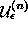 is formed in phase space containing
all points 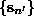 such that 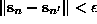. The
radius of the neighborhoods
, a
neighborhood 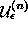 is formed in phase space containing
all points 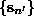 such that 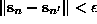. The
radius of the neighborhoods  should be taken large enough in order
to cover the noise extent, but still smaller than a typical curvature radius.
These conditions cannot always be fulfilled simultaneously, in which case one
has to repeat the process with several choices and carefully evaluate the
results. If the noise level is substantially smaller than the typical radius
of curvature, neighborhoods of radius about 2-3 times the noise level gave the
best results with artificial data. For each embedding vector
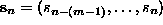 (the delay time has been set to unity), a
corrected middle coordinate 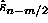 is computed by averaging over
the neighborhood :
should be taken large enough in order
to cover the noise extent, but still smaller than a typical curvature radius.
These conditions cannot always be fulfilled simultaneously, in which case one
has to repeat the process with several choices and carefully evaluate the
results. If the noise level is substantially smaller than the typical radius
of curvature, neighborhoods of radius about 2-3 times the noise level gave the
best results with artificial data. For each embedding vector
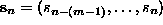 (the delay time has been set to unity), a
corrected middle coordinate 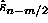 is computed by averaging over
the neighborhood :
After one complete sweep through the time series, all measurements  are
replaced by the corrected values 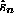. Of course, for the first and last
(m-1)/2 points (if m is odd), no correction is available. The average
correction can be taken as a new neighborhood radius for the next iteration.
Note that the neighborhood of each point at least contains the point itself.
If that is the only member, the average Eq.(
are
replaced by the corrected values 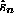. Of course, for the first and last
(m-1)/2 points (if m is odd), no correction is available. The average
correction can be taken as a new neighborhood radius for the next iteration.
Note that the neighborhood of each point at least contains the point itself.
If that is the only member, the average Eq.( ) is simply the
uncorrected measurement and no change is made. Thus one can safely perform
multiple iterations with decreasing values of
) is simply the
uncorrected measurement and no change is made. Thus one can safely perform
multiple iterations with decreasing values of  until no further
change is made.
until no further
change is made.
Let us illustrate the use of this scheme with an example, a recording of the
air flow through the nose of a human as an indicator of breath
activity. (The
data is part of data set B of the Santa Fe time series contest held in
1991/92 [17], see Rigney et al. [60] for a description.)
The result of simple nonlinear noise reduction is shown in Fig.  .
.
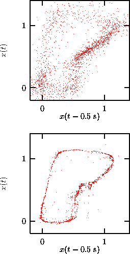
Figure: Simple nonlinear noise reduction of human breath rate data. Three iterations have been carried out, staring with neighborhoods of size 0.4 units. Embeddings in 7 dimensions at unit delay have been used. Arguably, the resulting series (lower panel) is less noisy. However, in Sec.we will show evidence that the noise is not just additive and independent of the signal.